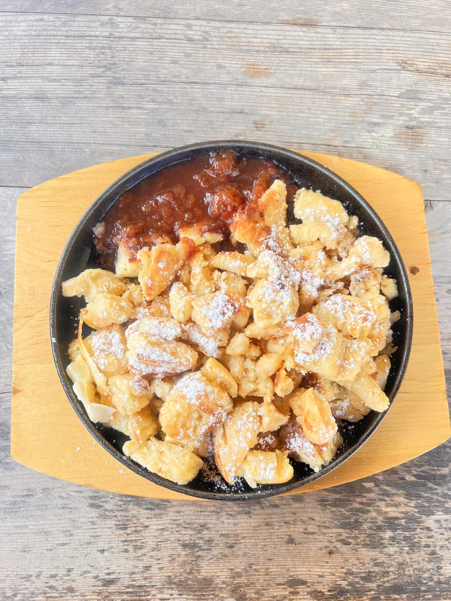

🇦🇹 Bad Gastein & Lungau Guide: 10 Orte – Wasserfall, Landawirsee, Therme & Hütte
Inhaltsverzeichnis
Österreich ist für Noel kein Urlaubsland wie jedes andere: Er hat in Bad Gastein an der Hotelrezeption gearbeitet. Preise und Zeiten sind Richtwerte (Stand 2026).
Meine Story in Bad Gastein & Lungau
Österreich ist für mich kein Urlaubsland wie jedes andere: Ich habe in Bad Gastein an der Hotelrezeption gearbeitet – die Reisewelt von der anderen Seite des Tresens. Ein Ort, durch dessen Zentrum ein Wasserfall rauscht, umgeben von Belle-Époque-Hotels, die aussehen wie aus einer anderen Zeit. Mein Hidden Gem: der Wasserfall, der mitten durch den Ort rauscht. Abends, wenn die Tagesgäste weg sind, wirkt die Belle-Époque-Kulisse fast melancholisch.
Im August 2026 ging es in den Lungau, eine der ruhigsten Ecken des Salzburger Landes. Der Weg führt über Wiesen und Grate, oben steht ein Gipfelkreuz, und darunter liegt der Landawirsee – glasklar und, sagen wir, erfrischend. Ich bin trotzdem rein. Komplett. Kopf zuerst. Danach gab es Kaiserschmarrn auf der Landawirseehütte, dazu ein kühles Bier aus der Region. Übernachtet wurde auf der Hütte. Und auf dem Rückweg stand eine Herde weißer Kühe mit ihren Kälbern mitten auf der Alm und hat uns sehr genau beobachtet.
Dieser Guide enthält Werbe-Links (GetYourGuide, Omio). Wenn du darüber buchst, bekomme ich eine kleine Provision – du zahlst keinen Cent mehr. Preise und Öffnungszeiten ändern sich – vor dem Besuch kurz prüfen.
🆓 Kostenlos erleben
3 Orte in Bad Gastein & Lungau, die du ohne Eintritt oder komplett gratis erleben kannst (bei manchen kostet nur ein Teil, z. B. Turm oder Museum):
Auf einen Blick
So kommst du hin und herum
Bad Gastein liegt an der Tauernbahn und ist per Zug aus Salzburg erreichbar; aktuelle Verbindungen vorher prüfen. Der Lungau liegt im Süden des Salzburger Landes und ist am besten per Auto oder Bus erreichbar.
Bad Gastein erreichst du mit dem Zug aus Salzburg in rund 1,5 Stunden (Fahrpläne vorher prüfen); der Bahnhof liegt mitten im Ort. Für den Lungau und die Wanderungen ist ein Auto praktisch, Busse fahren aber ebenfalls. In der Region gibt es oft Gästekarten, die Bus und Bahn einschließen – frag bei der Unterkunft.
Bergbahnen haben feste Betriebszeiten und schließen bei schlechtem Wetter; prüfe vorher die Betriebsmeldung.
1. Must-Sees
Gasteiner Wasserfall🆓 Kostenlos erlebbar
Der Wasserfall mitten im Ort. Frei zugänglich, mit Aussichtspunkten entlang der Schlucht.
Der Gasteiner Wasserfall donnert in mehreren Stufen mitten durch den Ort – rund um ihn stehen Belle-Époque-Hotels, Cafés und Aussichtspunkte. Mit mehr als 300 Metern Gesamthöhe ist er einer der spektakulärsten Wasserfälle, die direkt in einer Stadt liegen. Es gibt Brücken und Wege, von denen du ihn von unten und oben sehen kannst.
Die Gischt kühlt die Luft spürbar ab, und im Winter bilden sich Eisfahnen. Ein Spaziergang um den Wasserfall dauert eine halbe bis eine Stunde; abends sind einige Bereiche beleuchtet. Trage rutschfeste Schuhe, da der Weg nass sein kann.
Tipp: Geh früh oder am Abend, wenn es ruhig ist – und wirf einen Blick auf die Hotels drumherum.
Landawirsee im Lungau💎 Hidden Gem🆓 Kostenlos erlebbar
Ein Bergsee auf 1.968 Metern, glasklar. Für den Landawirsee brauchst du Trittsicherheit und gutes Schuhwerk. Plan die Hütte als Etappe ein – und nimm ein Handtuch mit. Du wirst reingehen wollen.
Der Landawirsee liegt im Lungau auf knapp 1.970 Metern in einer Karlandschaft, umgeben von Felswänden und Almwiesen. Das Wasser ist glasklar und kalt. Der Aufstieg ist nicht extrem lang, aber steil und verlangt Trittsicherheit; Wanderschuhe und Wetterschutz sind Pflicht. Plane je nach Startpunkt mehrere Stunden ein (Zeiten vorher prüfen).
Die Landawirseehütte liegt am Weg und ist ein gutes Ziel für eine Rast und Übernachtung (vorher reservieren). Pack Handtuch und Wechselkleidung ein, wenn du ins Wasser willst – es ist erfrischend. Gewitter am Nachmittag sind im Sommer möglich: starte früh.
Tipp: Starte früh, prüfe den Wetterbericht und reserviere die Hütte, wenn du übernachten willst.
Kaiserschmarrn auf der Landawirseehütte
Danach Kaiserschmarrn und ein kühles Bier aus der Region, Übernachtung auf der Hütte.
Der Kaiserschmarrn ist ein Klassiker der Alpenküche: ein luftiger, zerrissener Pfannkuchen mit Rosinen, Puderzucker und Zwetschgenröster oder Apfelmus. Auf der Hütte schmeckt er nach der Wanderung doppelt gut. Dazu gibt es Bier oder Almdudler aus der Region.
Die Hütte bietet einfache Zimmer oder Lager (Preise und Reservierung vorher prüfen). Wer übernachtet, erlebt Sonnenuntergang und Sternenhimmel in der Stille der Berge.

Belle-Époque-Architektur & Straubinger Platz🆓 Kostenlos erlebbar
Bad Gastein war im 19. Jahrhundert ein mondäner Kurort für Kaiser, Könige und Künstler. Prachtvolle Hotels im Stil der Belle Époque säumen den Hang über dem Wasserfall. Einige sind restauriert und eröffnet, andere stehen leer – dieser Kontrast aus Glanz und Verfall macht den Reiz des Ortes aus.
Ein Spaziergang durch den Ort mit Blick auf die Fassaden, kleine Cafés und Kunstgalerien dauert zwei Stunden. Am Straubinger Platz und in den Gassen rund um den Wasserfall findest du die schönsten Ansichten.
Tipp: Geh abends zum Wasserfall und schau in die Lichter der Hotels.
Felsentherme Bad Gastein
Die Felsentherme ist ein modernes Thermalbad direkt im Fels, mit warmem, mineralhaltigem Gasteiner Thermalwasser, Becken innen und außen und einem Saunabereich. Wer nach einer Bergtour entspannen will, ist hier richtig; vom Außenbecken blickst du auf die Berge.
Preise und Öffnungszeiten ändern sich (vorher prüfen). Das Wasser wird seit Jahrhunderten genutzt; plane zwei bis drei Stunden ein und nimm Badekleidung mit.
Tipp: Plane die Therme für den Nachmittag nach einer Wanderung ein.
Stubnerkogel & Hängebrücke
Die Stubnerkogelbahn bringt dich in Minuten vom Ort auf rund 2.200 Meter. Oben erwartet dich eine Hängebrücke, die über eine Schlucht führt, ein Aussichtspunkt mit Blick auf das Gasteiner Tal und Wanderwege durch Almgelände. Im Winter ist es ein Skigebiet.
Die Fahrt lohnt sich bei klarem Wetter; prüfe Betriebszeiten und Wetter vorher. Nimm eine Jacke mit – oben ist es deutlich kühler.
Tipp: Fahr bei klarem Wetter hinauf und früh am Tag.
Hidden Gems & Lungau
Was Österreich ausmacht
Rund zwei Drittel des Landes sind Alpen. Die Wiener Kaffeehauskultur gehört zum immateriellen Kulturerbe der UNESCO. Bad Gastein war im 19. Jahrhundert das Bad der Kaiser und Könige, Kaiserin Sisi kam zur Kur. Seit 1955 ist Österreich neutral. Wenn du nur ein Wochenende hast: Fahr in die Berge. Ein See auf fast 2.000 Metern schlägt jede Fußgängerzone.
📍 Diesen Guide in Google Maps speichern
1. Schnell: Route öffnen
2. Dauerhaft: als eigene Karte (3 Minuten)
- Lade die Ortsliste herunter (CSV).
- Öffne Google My Maps → „Neue Karte erstellen“ → „Importieren“ → Datei auswählen.
- Als Position die Spalte „Ort“, als Titel „Name“ wählen – fertig.
- In der Google-Maps-App findest du die Karte unter „Gespeichert“ → „Karten“, auch unterwegs.
⬇️ Ortsliste herunterladen (CSV)
3. Einzeln speichern
Dein Plan
Tag 1: Wochenende Gastein & Lungau
- Tag 1 Vormittag – Wasserfall und Belle-Époque-Spaziergang
- Tag 1 Nachmittag – Felsentherme
- Tag 2 früh – Aufstieg zum Landawirsee
- Tag 2 Mittag – Kaiserschmarrn auf der Hütte
- Tag 3 optional – Stubnerkogel oder Burg Mauterndorf
Häufige Fragen
Ist der Landawirsee für Anfänger?
Du brauchst Trittsicherheit und gutes Schuhwerk.
Wie viele Tage braucht man in Bad Gastein?
Ist Bad Gastein auch im Winter schön?
🗺️ Alle Orte auf meiner Karte → Mehr Guides und Reels auf Instagram: @hiddengem.atlas
Guide teilen: Per WhatsApp